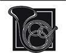

Çağırılan
Kadınlara ait dairelerdeki odasında yalnız olan Moiraine, omzundaki, üzerine kıvrımlı sarmaşık ve asmalar işlenmiş olan şalını düzeltti ve bir köşede duran uzun boy aynasında bıraktığı etkiyi inceledi. İri, koyu renkli gözleri öfkeli olduğunda şahin gözü kadar keskin görünebilirdi. Şimdi sırlı camı delip geçiyor gibilerdi. Fal Dara'ya gelirken şalı eyer çantalarının içine atmış olması şans eseriydi. Giyenin sırtının tam ortasında alazlı Tar Valon Alevi ve Ajah'ını -Moiraine'in-ki sabah göğü kadar maviydi- gösteren renklere boyanmış, uzun bir saçağı olan şallar Tar Valon dışında nadiren, oradayken bile çoğunlukla sadece Beyaz Kule'nin içinde giyilirdi. Tar Valon'da olan, Kule Salonu'nun toplanması hariç pek az olay şalları gerektirecek resmiyetteydi ve Parlak Duvarlar'ın ardında Alev'i gören pek çok insan kaçar veya Işığın Çocukları'nı çağırmaya giderdi. Bir Beyazpelerinli'nin oku herkes için olduğu kadar bir Aes Sedai için de ölümcüldü ve Çocuklar bir Aes Sedai'nin okçuyu ok yerini bulmadan önce, daha bu konuda bir şeyler yapabilirken görmesine izin vermeyecek kadar kurnazdı. Moiraine kesinlikle şalı Fal Dara'da giyeceğini tahmin etmemişti. Ama Amyrlin'in huzuruna çıkılırken uyulması gereken gelenekler vardı.
İnce yapılıydı, kesinlikle uzun boylu sayılmazdı ve Aes Sedailere özgü yanakları pürüzsüz ve yaşı belirsiz hali, olduğundan genç görünmesine neden oluyordu, ancak Moiraine'de her türlü toplantıda baskın çıkacak buyurgan bir zerafet ve soğukkanlılık vardı. Cairhien Kraliyet Sarayı'nda yetişirken edindiği bu tavır, Aes Sedai olarak geçirdiği yıllarda, artmak yerine azalmıştı. O gün, bunun her zerresine ihtiyacı olabileceğini biliyordu. Yine de o günkü dinginliği büyük ölçüde yüzeydeydi. Bir sorun olmalı, aksi halde bizzat gelmezdi, diye düşündü en azından onuncu kez. Ama bunun ardından daha en az bin soru geliyordu. Ne gibi bir sorun ve neden onunla birlikte gelmeyi seçti? Neden buraya? Şimdi işlerin ters gitmesine izin verilemez.
Omzundan dalgalar halinde sarkan koyu renkli saçlarına tutturulmuş narin, altın zincire dokunduğunda, sağ elindeki Büyük Yılan yüzüğü, ışığı donuk bir biçimde yansıttı. Zincirin ucundan, alnının orta yerinde ufak, saydam bir mavi taş sarkıyordu. Beyaz Kule'deki pek çokları, bu taşı odak noktası olarak kullanıp yapabileceği numaraları biliyordu. Taş sadece, parlatılmış mavi renkli kristal parçasıydı, genç bir kızın ilk eğitimi sırasında, ona rehberlik edecek kimse yokken kullandığı bir şeyden ibaretti. Kız angreal ve ondan da güçlü olansa angreal -Efsaneler Çağı'nın, Aes Sedailere Tek Güç'ten, bir kişinin tek başına zarar görmeden yapabileceğinden büyük bir miktarı yönlendirmesine olanak veren bu ünlü yadigârları- hakkındaki öyküleri hatırlamış ve yönlendirmek için bir tür odak noktasının gerekli olduğu kanısına varmıştı. Beyaz Kule'deki kız kardeşleri, numaralarından birkaçını biliyor, var olmayan birkaçının da varlığından şüpheleniyordu; bunları duyduğunda hayrete düşmüştü. Taşla yaptığı şeyler, zaman zaman yararlı olmasına rağmen basit ve ufaktı; bir çocuğun tasavvur edeceği türden şeyler. Ama Amyrlin'in yanında yanlış türden kadınlar varsa, kristal, hakkında anlatılan öyküler sayesinde bunların dengesini bozabilirdi.
Oda kapısı hızlı hızlı ve ısrarla çalındı. Hiçbir Shienarlı, hiç kimsenin kapısını böyle çalmazdı, özellikle de kendisininkini. Gözleri huzurla bakana, tüm düşünceler karanlık derinliklerinde gizlenene kadar aynaya bakmayı sürdürdü. Kemerinde asılı duran yumuşak, deri keseyi kontrol etti. Onu Tar Valon'dan çıkaran sorunlar neyse, onun önüne bu sorunu getirdiğimde onları unutacaktır. Odayı aşıp kapıyı kendisini almaya gelen iki kadın için hazırlanmış sakin bir gülümsemeyle açmadan önce ilkinden bile şiddetli olan ikinci bir vurma sesi duyuldu.
İkisini de tanımıştı. Mavi saçaklı şalı içinde koyu renk saçlı Ana-Kadınlara ait dairelerdeki odasında yalnız olan Moiraine, omzundaki, üzerine kıvrımlı sarmaşık ve asmalar işlenmiş olan şalını düzeltti ve bir köşede duran uzun boy aynasında bıraktığı etkiyi inceledi. İri, koyu renkli gözleri öfkeli olduğunda şahin gözü kadar keskin görünebilirdi. Şimdi sırlı camı delip geçiyor gibilerdi. Fal Dara'ya gelirken şalı eyer çantalarının içine atmış olması şans eseriydi. Giyenin sırtının tam ortasında alazlı Tar Valon Alevi ve Ajah'ını -Moiraine'in-ki sabah göğü kadar maviydi- gösteren renklere boyanmış, uzun bir saçağı olan şallar Tar Valon dışında nadiren, oradayken bile çoğunlukla sadece Beyaz Kule'nin içinde giyilirdi. Tar Valon'da olan, Kule Salonu'nun toplanması hariç pek az olay şalları gerektirecek resmiyetteydi ve Parlak Duvarlar'ın ardında Alev'i gören pek çok insan kaçar veya Işığın Çocukları'nı çağırmaya giderdi. Bir Beyazpelerinli'nin oku herkes için olduğu kadar bir Aes Sedai için de ölümcüldü ve Çocuklar bir Aes Sedai'nin okçuyu ok yerini bulmadan önce, daha bu konuda bir şeyler yapabilirken görmesine izin vermeyecek kadar kurnazdı. Moiraine kesinlikle şalı Fal Dara'da giyeceğini tahmin etmemişti. Ama Amyrlin'in huzuruna çıkılırken uyulması gereken gelenekler vardı.
Anaiya ile kızıl püsküllü şalı içindeki sarışın Liandrin. Liandrin salt genç gözükmekle kalmıyordu; gençti ve güzeldi, bebek gibi bir yüzü, ufak, şımarık bir ağzı vardı ve kapıyı tekrar vurmak için elini kaldırmıştı. Koyu renkli kaşları ve ondan da koyu gözleri, omuzlarına dökülen soluk bal rengi örgülerle keskin bir karşıtlık oluşturuyordu, ama bu birleşim, Tarabon'da nadir görülen bir şey değildi. İki kadın Moiraine'den uzun boyluydu, gerçi Liandrin'le farkları en çok bir el boyu kadardı.
Moiraine kapıyı açar açmaz Anaiya'nın duygusuz yüzünde bir gülümseme belirdi. Bu gülümseme, ona, sahip olup olabileceği yegâne güzelliği katıyordu, ama bu da yeterliydi; Anaiya onlara gülümsediğinde neredeyse herkes, kendini yatışmış, rahat ve özel hissederdi. "Işık üzerinde parlasın, Moiraine. Seni tekrar görmek güzel. İyi misin? Çok uzun zaman oldu."
"Sen burada olduğun için yüreğim daha ferah, Anaiya." Bu kesinlikle doğruydu; Fal Dara'ya gelen Aes Sedailer arasında en azından bir dostu olduğunu bilmek güzeldi. "Işık seni aydınlatsın!"
Liandrin ağzını büzdü ve şalını çekiştirdi. "Amyrlin Makamı, seni huzuruna bekliyor, kız kardeşim." Sesi de şımarık ve sertti. Moiraine yüzünden ya da sadece onun yüzünden değildi; Liandrin'in sesi her zaman bir şeylerden memnun değilmiş gibi çıkardı. Kaşlarını çatarak Moiraine'in omzunun üzerinden odaya bakmaya çalıştı. "Bu oda, muhafazalı. İçeri giremeyiz. Neden kız kardeşlerine karşı odanı koruyorsun?
"Herkese karşı," diye yanıt verdi Moiraine sakin bir sesle. "Hizmetçi kadınların çoğu Aes Sedaileri merak ediyor ve ben burada değilken odamı karıştırmalarını istemiyorum. Şu âna kadar bir ayrım yapmak gerekli olmadı." Kapıyı arkasından çekerek kapayarak üçünü koridorda bıraktı. "Gidelim mi? Amyrlin'i bekletmemeliyiz."
Yanında gevezelik eden Anaiya'yla birlikte koridorda yürümeye başladı. Liandrin bir an durup Moiraine'in ne sakladığını merak ediyormuş gibi kapıya baktı, sonra diğerlerine katılmak için seğirtti. Moiraine'i makasa alarak bir Muhafız gibi katı bir tavırla yürümeye başladı. Anaiya sadece yanlarında yürüyor, ona eşlik ediyordu. Terlikli ayakları basit desenlerle dokunmuş kalın halıların üzerinde yumuşak sesler çıkarıyordu.
Özel üniformalı kadınlar geçerken yerlere kadar eğildiler; çoğu, bizzat Fal Dara Lordu'nun önünde eğileceklerinden daha çok. Üç Aes Sedai bir aradaydı, Amyrlin Makamı da bizzat kaledeydi; kaledeki hiçbir kadının yaşamı boyunca beklemediği kadar büyük bir onurdu bu. Asil Soylardan birkaç kadın koridorlara çıkmıştı ve onlar da Lord Agelmar için asla yapmayacakları bir şeyi yaparak eğilip selam verdiler. Moiraine ve Anaiya gülümsedi ve selamların her birini, hizmetkârdan veya soyludan gelmesine bakmadan eşit bir biçimde kabul etmek üzere başlarını eğdiler. Liandrin hiçbirini görmemiş gibi davrandı.
Burada sadece kadınlar vardı, elbette. On yaşından büyük hiçbir Shienarlı erkek, izin veya davet olmadan kadınların odalarına girmezdi; ancak birkaç ufak oğlan çocuğu buradaki koridorlarda koşup oynuyordu. Kız kardeşleri yerlere kadar eğilirken çocuklar da tek dizlerinin üzerine acemice çöküyorlardı. Anaiya ara sıra gülümsüyor ve geçerken ufak kafalardan birini okşuyordu.
"Bu defa, Moiraine," dedi Anaiya, "Tar Valon'dan çok uzak kaldın. Çok uzun. Tar Valon seni özledi. Kız kardeşlerin seni özledi. Ve Beyaz Kule'de sana ihtiyaç var."
"Bazılarımızın dünyada çalışması gerek," dedi Moiraine şefkatle. "Kule Salonu'nu sana bırakacağım, Anaiya. Yine de Tar Valon'dayken dünyada olanlar hakkında benden çok haberin oluyor. Çoğu zaman ben dün bulunduğum yerde olup bitenleri kaçırıyorum. Sende ne haberler var?"
"Üç sahte Ejder daha." Liandrin kelimeleri ısırarak söylemişti. "Saldaea, Murandy ve Tear'da, sahte Ejderler toprakları viran ediyor. Bu arada siz Maviler gülümsüyor, havadan sudan bahsediyor ve geçmişe tutunmaya çalışıyorsunuz." Anaiya bir kaşını kaldırdı ve Liandrin burnunu sertçe çekip ağzını hemen kapadı.
"Üç," diye dalıp gitti Moiraine. Bir an gözlerinde bir ışık belirdi, ama onu çabucak gizledi. "Son iki yılda üç, şimdi de aynı anda üç tane daha."
"Diğerleriyle olduğu gibi, bunlarla da ilgilenilecektir. Bu erkek sürüngenlerle ve sancaklarını izleyen her türlü ayak takımı yığınıyla."
Liandrin'in sesindeki kendinden eminlik, Moiraine'e neredeyse komik gelmişti. Neredeyse. Bunu komik bulamayacak kadar gerçeklerin, olasılıkların farkındaydı. "Birkaç ay unutmana yetti mi, kardeşim? Ayak takımı ya da değil, en son sahte Ejder ordusu, yenilgiye uğratılana kadar Gheldan'ı neredeyse paramparça etmişti. Evet, Logain artık Tar Valon'da, ehlileştirildi ve sanırım güvenli, ama onu zararsız hale getirmeye çalışırken kız kardeşlerimizden bazıları canını verdi. Bir kız kardeşimizin ölmesi bile katlanamayacağımız kadar büyük bir kayıp, ancak Gheldan'ın verdiği kayıplar çok daha kötüydü. Logain'den önceki ikisi yönlendirme yetisine sahip olmamalarına rağmen, Kandor ve Arad Doman halkı onları iyi hatırlıyor. Yakılan köyler ve savaşta ölen adamlar. Dünya aynı anda üç tanesiyle ne kadar kolay başedebilir? Bayraklarının altına koşan kaç kişi olacak? Yenidendoğan Ejder olduğunu iddia eden herhangi bir erkeğin mürit sıkıntısı çektiği hiç olmamıştır. Savaşlar bu defa ne kadar büyük olacak?"
"Durum bu kadar ciddi değil," dedi Anaiya. "Bildiğimiz kadarıyla, yalnızca Saldaea'daki yönlendirme yetisine sahip. Kendine fazla mürit toplayacak şansı olmadı ve kardeşlerimiz şimdiden icabına bakmak için orada olmalı. Tearlılar, sahte Ejderleri ve onun müritlerine Haddon Mirk'te art arda baskınlar yapıyorlar, Murandy'deki ise şimdiden zincir altında." Kısa, hayret dolu bir kahkaha attı. "Tüm halklar arasından Murandylilerin kendilerininkinin icabına bu kadar çabuk bakmaları tuhaf. Sorsan kendilerine Murandyliler bile değil, Lugarderler veya Isishlinni ya da şu lordun veya bu leydinin adamı, derler. Yine de komşularından birinin bunu istila için bahane olarak kullanacağından korkan Murandyliler, sahte Ejderlerinin üzerine, o ağzını açıp iddiasını ortaya koyar koymaz atladılar."
"Yine de," dedi Moiraine, "aynı anda üç tanesi yok sayılamaz. Kız kardeşlerden biri bir Kehanette bulundu mu?" Bu ufak bir olasılıktı -yüzyıllardan beri pek az Aes Sedai bu Yetenek'i kısmen de olsa göstermeyi başarmıştı- bu yüzden Anaiya başını iki yana salladığında pek şaşırmadı. Şaşırmadı, ama biraz rahatladı.
Koridorların kesiştiği bir noktaya Leydi Amalisa ile aynı anda vardılar. Kadın tam bir reverans yaparak yerlere kadar eğildi ve soluk yeşil eteklerini yaydı. "Tar Valon'a şerefler olsun," diye mırıldandı. "Aes Sedailere şerefler olsun."
Fal Dara Lordu'nun kız kardeşine, kafa sallamaktan daha fazlası gerekiyordu. Moiraine Amalisa'nın ellerini tuttu ve kızı ayağa kaldırdı. "Bize şeref verdin, Amalisa. Kalk, Kız kardeşim."
Amalisa, yüzü kızararak zerafetle doğruldu. Tar Valon'a bile gitmemişti ve kendisine bir Aes Sedai tarafından Kız kardeş olarak hitap edilmesi onun mevkisinde biri için bile ağır bir şeydi. Kısa boylu ve orta yaşlı olan kadının esmer, olgun bir güzelliği vardı ve yanaklarındaki allık bunu ortaya çıkarıyordu. "Bana çok büyük bir şeref veriyorsunuz, Moiraine Sedai."
Moiraine gülümsedi. "Birbirimizi ne kadar zamandır tanıyoruz, Amalisa? Hiç birlikte oturup çay içmemişiz gibi sana Leydi Amalisa diye mi hitap etmem gerekiyor şimdi?"
"Elbette hayır." Amalisa da ona gülümsedi. Ağabeyinin yüzünden okunan güç onun yüzünde de vardı ve çenesinin yumuşak çizgileri bunu azaltmıyordu. Agelmar'ın çetin ve ünlü bir savaşçı olmasına rağmen, kız kardeşine ancak denk olduğunu söyleyenler vardı. "Ama Amyrlin Makamı buradayken... Kral Easar Fal Dara'yi ziyaret ettiği zaman kendi aramızda ona Magami, Ufak Amcam olarak hitap ederim, ben çocukken beni omzunda taşıdığı zamanlarda olduğu gibi, ama halk arasında farklı olması gerekir."
Anaiya bir cık cık sesi çıkardı. "Bazen resmiyet şarttır, ama erkekler çoğu zaman bunu gerektiğinden fazla abartır. Lütfen, bana Anaiya de, izin verirsen ben de sana Amalisa diyeyim."
Moiraine, gözünün ucuyla bir köşeyi aceleyle dönüp kaybolan Egwene'i gördü. Deri bir yelek giymiş, başı eğik ve kolları çıkınlarla yüklü bir şekil peşinden badi badi yürüyordu. Moiraine kendisine hızla gizlediği ufak bir gülümsemeyi çok görmedi. Kız Tar Valon'da da bu kadar inisiyatif gösterirse, diye düşündü alayla, bir gün Amyrlin Makamı'nda oturur. O inisiyatifi kontrol etmeyi öğrenebilirse. Oturulacak bir Amyrlin Makamı kalırsa.
Dikkatini yeniden diğerlerine çevirdiğinde, Liandrin konuşmaktaydı.
"... ben de ülkeniz hakkında daha fazla bilgi alma imkânını memnuniyetle karşılarım." Yüzünde içten, neredeyse çocukça bir gülümseme vardı ve sesi dostaneydi.
Amalisa ona şahsi bahçesinde kendisi ve leydilere katılma daveti yaptığında, Liandrin de sıcak bir tavırla kabul ettiğinde Moiraine yüzünü sakin durmaya zorladı. Liandrin pek az dostluk kurmuştu ve bunların hiçbiri Kızıl Ajah'ın dışında değildi. Aes Sedailerin dışında ise kesinlikle hiç. Bir erkekle veya Trollocla arkadaş olmayı tercih eder. Moiraine, Liandrin'in erkekler ve Trolloclar arasında fazla bir fark gözettiğinden emin değildi. Kızıl Ajah'takilerin herhangi birinin de.
Anaiya, halihazırda Amyrlin Makamı'nın huzuruna gitmeleri gerektiğini açıkladı. "Elbette," dedi Amalisa. "Işık onu aydınlatsın ve Yaratıcı esirgesin onu. Daha sonra, o halde." Yanından ayrılırlarken dimdik durup başını eğdi.
Yürürken, Moiraine, Liandrin'i, ona doğrudan bakmaksızın inceliyordu. Bal rengi saçları olan Aes Sedai, gül goncalarını andıran dudaklarını düşünceli bir ifadeyle büzmüş, dosdoğru ileriye bakıyordu. Hem Moiraine'i, hem de Anaiya'yı unutmuş gibi bir hali vardı. Neler çeviriyor?
Anaiya olağandışı bir şey fark etmiş gibi görünmüyordu, ama zaten o her zaman insanları hem oldukları, hem de olmak istedikleri gibi kabullenmeyi başarırdı. Anaiya'nın Beyaz Kule'de bu kadar başarılı olması, Moiraine'i her zaman şaşırtmıştı, ama dürüst olmayan kişiler onun açıklığı ve dürüstlüğünü, herkesi kabullenişini kurnazca birer düzen olarak kabul eder gibiydi. Sonunda Anaiya'nın tam da söylediği şeyi kastettiği ve kastettiği şeyi söylediği ortaya çıkınca, bütünüyle neye uğradıklarını şaşırırlardı. Meselelerin merkezindekileri görebilme yetisine sahipti, gördüklerini de kabul edebilme yetisine. Şimdiyse haberlerden şen bir edayla bahsetmeye devam ediyordu.
"Andor'dan gelen haberler hem iyi, hem de kötü. Caemlyn'deki sokak ayaklanmaları baharın gelmesiyle birlikte azaldı, ama hâlâ uzun süren kış için Kraliçe'yi ve Tar Valon'u suçlayanlar var, hem de çok sayıda. Morgase'in tahtı, geçen yıl olduğu kadar güvenli değil, ama hâlâ tahtında oturuyor ve Gareth Bryne Kraliçe'nin Askerleri'nin Kumandan Generali olduğu sürece de oturmaya devam edecek. Kız-veliaht Leydi Elayne ile kardeşi Lord Gawyn de eğitimleri için Tar Valon'a güvenli bir biçimde ulaşmış durumda. Beyaz Kule'de bu geleneğin çiğneneceğine dair bir korku vardı."
"Morgase soluk aldığı sürece olmaz."
Liandrin yeni uyanmış gibi hafifçe irkildi. "Dua edelim de, soluk almaya devam etsin. Kız-veliaht'ın kafilesi Erinin Nehri'ne kadar Işığın Çocukları tarafından takip edildi. Tar Valon'un köprülerine kadar. Daha fazlası hâlâ, bir yaramazlık yapma fırsatı bulmak üzere Caemlyn'in dışında kamp kurmuş durumda, Caemlyn'in içinde de hâlâ dinleyenler var."
"Belki de Morgase'in biraz ihtiyatlı olmayı öğrenmesinin zamanı geldi." Anaiya içini çekti. "Dünya her gün daha tehlikeli bir hal alıyor, bir kraliçe için bile. Belki de bir kraliçe için daha da çok. O her zaman başına buyruk biri olmuştur. Daha çocukken Tar Valon'a gelişini hatırlıyorum. Tam bir kız kardeş olacak yeteneğe sahip değildi ve bu içine dert oluyordu. Bazen kızını bu yüzden zorladığını düşünüyorum, kızın seçimi ne olursa olsun."
Moiraine küçümseyerek burnunu çekti. "Elayne içinde kıvılcımla doğmuştu; bu bir seçim meselesi değildi. Amadicia'daki tüm Beyazpelerinliler Caemlyn'in dışında kamp kurmuş bile olsa, Morgase kızın eğitim görmemek yüzünden ölmesine göz yummazdı. Gareth Bryne ile Kraliçe'nin Askerleri'ne Tar Valon'a kadar bir yol açmalarını buyurur, Gareth Bryne da bunu tek başına yapmak zorunda kalsa bile başarırdı." Ama kızın gerçek gücünü gizli tutmak zorunda. Andor halkı bunu biliyor olsa Elayne'in Morgase'ten sonra Aslan Taht'ta oturmasını kabul eder miydi? Sadece gelenek gereğince Tar Valon'da eğitilmiş bir kraliçe değil, tam bir Aes Sedai olduğunu? Kayıtlı tarih boyunca Aes Sedai olmaya hak kazanmış sadece bir avuç kraliçe vardı ve bunu ilan eden birkaçı, sonunda pişman olmuştu. İçinde bir hüzün hissetti. Ama ortada tek bir ülke ve tek bir tahta yardım edilemeyecek kadar çok şey dönüyordu.
"Illian'da, dört yüzyıldan beri ilk kez Büyük Boru Avı'nın başlatıldığını bilmen gerekiyor. Illianlılar Son Savaş'ın yaklaşmakta olduğunu söylüyor," Anaiya hafifçe ürperdi, bunda da haklıydı, ama duraksamadan devam etti, "ve Valere Borusu Gölge'ye karşı verilecek son savaştan önce bulunmalı. Dört bir yandan, tümü de efsanelerin bir parçası olmaya, Boru'yu bulmaya hevesli erkekler toplanıyor. Murandy ile Altara elbette diken üzerinde, bunun kendilerine karşı bir hamleye paravan olduğunu düşünüyorlar. Murandylilerin sahte Ejderlerini bu kadar çabuk yakalamalarının nedeni de muhtemelen budur. Her halükarda, âşıkların devirlerine ekleyecekleri bir sürü yeni öykü olacak.. Işık versin de, iş yeni öykülerle kalsın."
"Belki de bekledikleri öyküler değildir," dedi Moiraine. Liandrin ona sert sert baktı, ama Moiraine yüz ifadesini değiştirmedi.
"Sanmam," dedi Anaiya sakince. "Devre ekledikleri öyküler, tamı tamına en az bekledikleri olacaktır. Onun ötesinde elimde sadece söylentiler var. Deniz Halkı tedirgin, gemileri dur durak bilmeden limandan limana uçuyor. Adalardan gelen Kız kardeşlerimiz, Seçilmişleri Coramoor'un geldiğini söylüyor, ama daha fazla bilgi vermiyorlar. Atha'an Mierelerin Coramoor konusunda dışarlıklılara karşı ne kadar ketum davrandığını bilirsin ve bu konuda kız kardeşlerimiz Aes Sedai'den çok Deniz Halkı gibi düşünüyorlar. Aieller de içten içe kaynıyor gibi görünüyor, ama kimse bunun nedenini bilmiyor. Kimse Aielleri bilmez. Işığa şükürler olsun ki, tekrar Dünyanın Omurgası'nı aşmaya niyetlendikleri yönünde bir kanıt yok." İçini çekip kafasını iki yana salladı. "Aiellerin arasından çıkmış tek bir kız kardeşimiz olması için neler vermezdim. Sadece bir tane. Onlar hakkında o kadar az bilgimiz var ki."
Moiraine güldü. "Bazen yerinin Kahverengi Ajah olduğunu düşünüyorum, Anaiya."
"Almoth Ovası," dedi Liandrin ve konuştuğuna şaşırmış gibi göründü.
"Şimdi o dediğin gerçekten de bir söylenti, Kız kardeşim," dedi Anaiya. "Biz Tar Valon'dan ayrılırken duyulan birkaç fısıltı. Almoth Ovası'nda, belki de Tümentepe'de savaş olabilir. Olabilir, diyorum. Fısıltılar hafifti. Söylentilerin söylentisi. Daha fazlasını duyamadan ayrıldık."
"Tarabon ve Arad Doman olması gerekirdi," dedi Moiraine ve başını iki yana salladı. "Neredeyse üç yüzyıldır Almoth Ovası için çekişiyorlar, ama iş hiç açık bir arbedeye dökülmedi." Liandrin'e baktı; Aes Sedailerin ülkeler ve hükmedenlere karşı eski bağlılıklarından feragat etmeleri gerekirdi, ama pek azı bunu bütünüyle yapardı. Doğduğun ülkeyi umursamamak kolay değildi. "Neden şimdi-?"
"Bu kadar boş laf yeter," diye sözünü kesti bal rengi saçları olan kadın öfkeyle. "Amyrlin seni bekliyor, Moiraine." Üç hızlı adım atarak diğerlerinin önüne geçti ve uzun bir kapıyı ardına kadar açtı.
Moiraine, belindeki keseye gayri ihtiyari dokunarak kapıda duran Liandrin'in yanından, diğer kadın kapıyı onun için açık tutuyormuş gibi başını sallayarak geçti. Liandrin'in yüzündeki akkor öfkeye gülümsemedi bile. Bu sefil kız neler çeviriyor?
Bekleme odasının zemini parlak renkli halılarla kat kat kaplanmış ve oda ahşabı yalın işlenmiş veya sadece cilalanmış koltuklar, yastıklı sedirler ve ufak masalarla hoş bir tarzda döşenmişti. Uzun ok yarıklarını pencerelere benzetmek için yanlarına brokarlı perdeler asılmıştı. Şöminelerde yanan ateş yoktu; o gün hava sıcaktı ve Shienar soğuğu, geceye kadar çökmeyecekti.
Amyrlin'le birlikte gelen Aes Sedailerden altıdan azı oradaydı. Moiraine içeri girince Kahverengi Ajah'tan Verin Mathwin ve Serafelle, başlarını kaldırıp bakmadılar. Serafelle, solmuş, deri ciltli bir kitabı dikkatle okuyor, kitabın yırtık pırtık sayfalarını özenle tutuyordu; bir ok yarığının altında bağdaş kurmuş oturan Verin ise ufak bir çiçeği ışığa tutmuş, dizinde dengelediği bir deftere notlar alıyor ve eskizler yapıyordu. Yanında, açık bir mürekkep hokkası yerde duruyordu, kucağında ise ufak bir çiçek yığını vardı. Kahverengi Kız Kardeşler bilgi aramak dışında pek az şeyle ilgilenirdi. Moiraine zaman zaman, onların dünyada, hatta yakın çevrelerinde olup biteni umursayıp umursamadıklarını merak ederdi.
Önceden odada olan diğer üç kadın döndüler, ama Moiraine'e bakmakla yetinip ona yaklaşmak için herhangi bir çaba göstermediler. Aralarından sadece birini, Sarı Ajah'tan ince yapılı bir kadını tanımıyordu; Tar Valon'da Aes Sedailerin tümünü, sayıları hiçbir zaman çok fazla olmasa da, tanıyamayacak kadar az zaman geçirmişti. Ancak diğer ikisini tanıyordu. Carlinya, şalındaki beyaz saçak kadar soluk benizli ve soğuk tavırlıydı, her açıdan Yeşillerden Alanna Mosvani'nin zıddıydı, ama ikisi birden durmuş, yüzlerinde herhangi bir ifade olmaksızın ona bakıyorlardı. Alanna, sert bir hareketle şalına sarındı, ama Carlinya hiçbir hareket yapmadı. Zayıf Sarı Kız kardeş, üzüntülü bir havayla başını öteye çevirdi.
"Işık hepinizi aydınlatsın, Kız kardeşlerim," dedi Moiraine. Kimse yanıt vermedi. Sarafelle veya Verin'in onu duyduğundan bile emin değildi. Diğerleri nerede? Hepsinin orada olmasına gerek yoktu -çoğu odalarında dinleniyor, yol yorgunluğunu üzerlerinden atıyor olacaktı- ama artık tedirgindi, soramadığı tüm sorular kafasına üşüşüyordu. Hiçbiri yüzünden okunmuyordu.
İç kapı açıldı ve Leane yanında yaldızlı alev asası olmadan göründü. Vakanüvis, çoğu erkek kadar uzun boylu, fidan gibi ve zarif, tunç teni ve kısa, koyu renkli saçlarıyla hâlâ güzeldi. Kule Salonu'nda kendi Ajah'ını temsilen değil, Vakanüvis sıfatıyla oturduğundan, üzerinde şal yerine el genişliğinde mavi bir omuz atkısı vardı.
Moiraine'e sertçe, "Demek buradasın," dedi ve arkasındaki kapıyı işaret etti. "Gel, Kız kardeşim. Amyrlin Makamı bekliyor." Öfkeli, keyifli veya heyecanlı olduğu zamanlarda bile asla değişmeyen bir biçimde kesik kesik, hızlı hızlı konuşuyordu. Moiraine, Leane'in peşinden içeri girdiğinde, Vakanüvis'in ne hissetmekte olduğunu merak etti. Leane kapıyı arkalarından kapadı; kapı bir hücre kapısının kapanışı gibi çarpılarak yerine oturdu.
Halının ortasındaki geniş bir masanın arkasında bizzat Amyrlin Makamı oturuyordu; masanın üzerinde de bir yolculuk sandığı boyutunda ve üzerinde gümüşten girift işlemeler olan düzleştirilmiş bir altın küp vardı. Masa kalın bacaklı ve ağırdı, ama iki kuvvetli adamın zorlukla kaldırabileceği bir ağırlığın altında eziliyor gibiydi.
Altın küpü gören Moiraine yüzündeki sakin ifadeyi korumakta zorlandı. Onu en son gördüğünde, Agelmar'ın hazine odasında kilit altında ve güvendeydi. Amyrlin Makamı'nın geldiğini duyunca, küpün varlığından ona kendisi bahsetmeye niyetlenmişti. Şimdiden Amyrlin'in elinde olması pek önemli olmasa da, endişe verici bir şeydi. Olaylar ondan hızlı ilerliyor olabilirdi.
Ağır bir reverans yaptı ve resmi bir tavırla, "Beni çağırdığın için geldim, Anne," dedi. Amyrlin elini uzattı ve Moiraine onun diğer Aes Sedailerin taktığından farklı olmayan yılan yüzüğünü öptü. Ayağa kalkarak, daha sohbet tonunda konuşmaya başladı, ama sadece biraz. Arkasında, kapının yanında duran Vakanüvis'in farkındaydı. "Hoş bir yolculuk yaptığını ümit ederim, Anne."
Amyrlin, Tear'da, soylu bir Hanedan'da değil, basit bir balıkçı ailesinde doğmuştu ve ismi Siuan Sanche'ydi, gerçi on yıl önce Kule Salonu'nda makama yükseldiği zamandan beri bu ismi çok az kişi kullanmış, hatta aklına getirmişti. O Amyrlin Makamı idi, o kadar. Omuzlarındaki geniş atkının üzerinde yedi Ajah'ın renklerinde şeritler vardı; Amyrlin hem tüm Ajahlara aitti, hem de hiçbirine ait değildi. Orta boylu ve güzel olmaktan çok biçimliydi, ama yüzünde, makama yükselmeden önce de orada olan bir güç, Tear'ın liman mahallesi Maule'un sokaklarında hayatta kalan bir kızın gücü vardı ve berrak mavi bakışları, krallar ve kraliçeleri, hatta Işığın Çocukları'nın Kumandan Yüzbaşısını bakışlarını kaçırmaya mecbur etmişti. Şimdi onun gözleri de tedirgindi ve ağzında yeni bir gerginlik vardı.
"Gemilerimizin Erinin üzerindeki yolculuğunu hızlandırmak için rüzgârları çağırdık Kızım, ve hatta akıntıları bile bize yardım edecek şekilde çevirdik." Amyrlin'in sesi boğuk ve hüzünlüydü. "Nehir boyunca uzanan köylerde neden olduğumuz sel baskınlarını gördüm ve havaya yaptıklarımızı da ancak Işık bilir. Verdiğimiz hasar ve belki de yok ettiğimiz ekinler, bize duyulan sevgiyi artırmayacak. Bütün bunlar buraya olabildiğince çabuk varmak içindi." Gözleri süslü altın küpe ilişti ve bir elini ona dokunacakmış gibi kaldırdı, ama konuştuğu zaman, "Elaida Tar Valon'da Kız kardeşim. Elayne ve Gawyn ile birlikte geldi," dedi.
Moiraine, Leane'in Amyrlin'in huzurunda her zaman olduğu gibi sessiz bir biçimde yanında durmakta olduğunun farkındaydı. Ancak kadın izliyor ve dinliyordu. "Şaşırdım, Anne," dedi Moiraine dikkatle. "Bu, Morgase'in Aes Sedailerden fikir almaması için uygun bir zaman değil." Morgase, bir Aes Sedai danışmanı olduğunu açıkça kabul eden az sayıda hükümdardan biriydi; neredeyse tüm hükümdarların bir Aes Sedai danışmanı vardı, ama çok azı bunu itiraf ederdi.
"Elaida ısrar etti Kızım, ve kraliçe olmasına rağmen, Morgase'in bir irade mücadelesinde Elaida'yı yenebileceğini sanmam. Her halükarda, belki de bu kez yenmek istemedi. Elayne'de potansiyel var. Daha önce hiç görmediğim kadar çok. Daha şimdiden ilerleme gösteriyor. Kızıl Kız kardeşler bu yüzden top balığı gibi şişiniyorlar. Kızın onların düşünme tarzına meylettiğini sanmam, ama henüz genç ve tahmin etmek imkânsız. Onu yönlendirmeyi beceremeseler bile, bu pek bir şeyi değiştirmez. Elayne pekâlâ da bin yıldan beridir gelen en güçlü Aes Sedai olabilir ve onu bulanlar Kızıl Ajahlar. Kız yüzünden Salon'da büyük itibar kazandılar."
"Fal Dara'da benimle birlikte iki genç kadın var, Anne," dedi Moiraine. "İkisi de Manetheren kanının hâlâ güçlü olduğu İki Nehir'den geliyorlar, buranın bir zamanlar Manetheren adlı bir ülke olduğunu hatırlamıyor bile olsalar. Eski kan şarkısını söylüyor, Anne ve İki Nehir'de yüksek sesle söylüyor. Bir köylü kızı olan Egwene de an az Elayne kadar güçlü. Kız-veliaht'ı gördüm ve bunu biliyorum. Diğerine gelince, Nynaeve, kendisi de daha bir kız çocuğundan az hallice olmasına rağmen köylerinde Hikmet'ti. Köyünün kadınlarının onu bu yaşta Hikmet seçmiş olması bir şeyler anlatıyor. Şimdi bilmeden yaptığı şeylerin denetimini eline aldığında, Tar Valon'daki herkes kadar güçlü olacaktır. Eğitimle birlikte, Elayne ve Egwene'in mumlarının yanında bir şenlik ateşi gibi parlayacaktır. Bu ikisinin Kızıl'ı seçme ihtimali de yok. Erkekler onlara komik geliyor, onları sinirlendiriyor, ama erkeklerden hoşlanmıyor değiller. Kızıl Ajah'ın Beyaz Kule'de Elayne'i bulmaları yüzünden kazandığı itibarı kolaylıkla dengeleyeceklerdir."
Amyrlin, bütün bunların bir önemi yokmuş gibi başıyla onayladı. Moiraine kendisine hakim olup yüz hatlarına sakin bir ifade veremeden önce kaşları hayretle kalktı. Bunlar, Kule Salonu'ndaki başlıca iki endişe sebebiydi: Tek Güç'ü yönlendirmek üzere eğitilecek kızların sayısının azalması ya da öyle görünmesi ve gerçek bir güce sahip olanların daha da az olmasıydı. Dünyanın Kırılışı yüzünden Aes Sedaileri suçlayanların içindeki korkudan beter, Işığın Çocukları'nın nefretinden beter, Karanlıkdostlarının işlerinden bile beter olan şey, sayıların düpedüz azalması ve yeteneklerin eksilmesiydi. Beyaz Kule'nin bir zamanlar kalabalık olan koridorları artık tenhaydı ve bir zamanlar Tek Güç'le yapılabilen şeyler artık ya güçlükle yapılabiliyor ya da hiç yapılamıyordu.
"Elaida'nın Tar Valon'a gelmesinin bir nedeni daha vardı, Kızım. Aynı mesajı, elime geçtiğinden emin olmak için altı ayrı güvercinle gönderdi -ve Tar Valon'da başka kimlere güvercin gönderdiğini ancak tahmin edebiliyorum-, sonra da kendisi geldi. Kule Salonu'na, bir ta'veren ve tehlikeli olan, genç bir adamla uğraştığını söyledi. Gencin Caemlyn'de olduğunu, ama kendisi kaldığı yeri keşfettiğinde, senin genci oradan kaçırdığını öğrenmiş olduğunu söyledi."
"Handakiler bize iyi ve sadakatle hizmet ettiler, Anne. Onlardan birine zarar verdiyse..." Moiraine sesindeki sertliği önleyemiyordu ve Leane'in yer değiştirdiğini duydu. Kimse Amyrlin Makamı'yla bu tonla konuşmazdı; tahtındaki bir kral bile.
"Bilmen gerekir ki, Kızım," dedi Amyrlin soğuk bir sesle, "Elaida tehlikeli gördüğü kişiler dışında kimseye zarar vermez. Karanlıkdostları veya Tek Güç'ü yönlendirmeye çalışan o zavallı ahmak erkekler. Ya da Tar Valon'u tehdit eden biri. Geri kalanlardan Aes Sedai olmayanlar onun gözünde bir taş tahtasındaki piyonlardan farksızdır. Hatırladığım kadarıyla Gill Usta adında biri olan hancı, kendisi için talihli bir biçimde Aes Sedailer hakkında çok olumlu bir görüşe sahipti ve Elaida'nın sorularını onu memnun edecek şekilde yanıtladı. Elaida onun hakkında olumlu şeyler söyledi. Ama yanında getirdiğin genç adamdan daha çok bahsetti. Şahinkanadı Artur'dan beri en tehlikeli erkek olduğunu söyledi. Zaman zaman Kehanet yeteneği gösterdiğini bilirsin, bu yüzden de sözlerinin Salon'da büyük ağırlığı vardı."
Moiraine, Leane uğruna sesini elinden geldiği kadar uysal tuttu. Bu pek de uysal sayılmazdı, ama elinden gelenin en iyisiydi. "Yanımda üç genç adam var, Anne, ama hiçbiri bir kral değil ve içlerinden birinin bile dünyayı tek bir hükümdar altında toplamanın düşünü kurduğunu sanmam. Yüzyıl Savaşı'ndan beri kimse Şahinkanadı Artur'un düşünü kurmadı."
"Evet, Kızım. Lord Agelmar'ın bana söylediğine göre, köylü delikanlılar. Ama aralarından biri ta'veren." Amyrlin'in gözleri tekrar düzleştirilmiş küpe kaydı. "Salon'da, beklemek üzere geri çekilmen gerektiği söylendi. Bu öneri Yeşil Ajah'ta Oturanlardan biri tarafından yapıldı, diğer ikisi de o sırada yanında başlarını sallayarak onayladıklarını belirtiyorlardı."
Leane, bir hoşnutsuzluk veya belki bir öfke sesi çıkardı. Amyrlin Makamı konuşurken her zaman geri planda kalırdı, ama Moiraine bu defaki ufak müdahalenin nedenini anlayabiliyordu. Yeşil Ajah bin yıldır Mavi Ajah'la ittifak halindeydi; Şahinkanadı Artur'un zamanından beri tek bir sesle konuştular dense yeriydi. "Ücra bir köyde sebze çapalamak gibi bir niyetim yok, Anne." Bunu yapacak da değilim, Salon ne derse desin.
"Yine Yeşiller tarafından, geri çekilme sırasındaki gözetiminin Kızıl Ajah'a verilmesi de önerildi. Kızıl Oturanlar şaşırmış görünmeye çalıştı, ama avlarının savunmasız olduğunu bilen balıkçıl kuşlarına benziyorlardı." Amyrlin burnunu çekti. "Kızıllar kendi Ajahlarından olmayan birinin gözetimini üstlenmeye gönülsüz olduklarını ifade ettiler, ama Salon'un arzularına uyacaklarını belirttiler."
Moiraine elinde olmadan ürperdi. "Bu son derece... tatsız olurdu, Anne." Tatsızdan kötü, çok daha kötü olurdu; Kızıllar asla nazik değildi. Bu düşünceyi daha sonra ilgilenmek üzere kararlılıkla bir kenara itti. "Anne, Yeşiller ve Kızıllar arasında görünürdeki bu ittifakı anlamıyorum. İnanışları, erkeklere karşı tavırlar, Aes Sedai olarak görevlerimiz hakkındaki görüşleri bile taban tabana zıt. Bir Kızıl ile bir Yeşil birbiriyle bağırışmadan konuşamaz bile."
"İşler değişir, Kızım. Ben, Mavilerden Amyrlin Makamı'na yükselen beşinci kişiyim. Belki de bunun çok büyük bir sayı olduğunu ve Mavi düşünce tarzının sahte Ejderlerle dolu bir dünyaya artık kafi gelmediğini düşünüyorlardır. Bin yıldan sonra, pek çok şey değişir." Amyrlin yüzünü buruşturdu ve adeta kendi kendisine konuştu. "Eski duvarlar zayıflıyor ve eski setler çöküyor." Silkindi ve sesi kararlı bir hal aldı. "Bayat balık gibi kokan başka bir öneri daha vardı. Leane, Mavi Ajah'tan olduğu, ben de Mavi'den geldiğim için, bu yolculukta yanıma Mavilerden iki kız kardeş vermenin Mavilere dört temsilci sağlayacağı öne sürüldü. Salon'da yüzüme karşı, lağımların onarımı tartışılıyormuş gibi önerildi. Beyaz Kız kardeşler'den ikisi ve iki Yeşil bana karşı fikir beyan etti. Sarılar kendi aralarında mırıldandılar, sonra da lehte veya aleyhte konuşmayı reddettiler. Biri daha hayır deseydi Anaiya ve Maigan kardeşlerin burada olmayacaktı. Beyaz Kule'den hiç çıkmamam gerektiği yönünde bazı konuşmalar bile yapıldı, üstelik açıktan açığa."
Moiraine, Kızıl Ajah'ın onu ellerinde istediğini duyduğu zamankinden daha büyük bir hayret içindeydi. Hangi Ajah'tan gelirse gelsin, Vakanüvis yalnızca Amyrlin namına, Amyrlin ise tüm Aes Sedailer ve tüm Ajahlar namına konuşurdu. Her zaman böyle olmuş ve kimse, Trolloc Savaşları'nın en karanlık günlerinde bile, Şahinkanadı Artur'un orduları sağ kalan Aes Sedailerin tümünü Tar Valon'a hapsettiği zaman bile aksi önerilmemişti. Her şeyin ötesinde, Amyrlin Makamı, Amyrlin Makamı'ydı. Her Aes Sedai ona itaat yemini etmişti. Kimse onun yaptığı şeyleri veya gitmeyi seçtiği yerleri sorgulayamazdı. Bu öneri üç bin yıllık gelenek ve kanuna aykırıydı.
"Buna kim cüret edebilir, Anne?"
Amyrlin Makamı'nın kahkahası acıydı. "Neredeyse herkes, Kızım. Caemlyn'de ayaklanmalar. İlan edilene kadar hiçbirimizin hakkında en ufak bir ipucuna sahip olmadığı Büyük Av. Yağmurdan sonra kızıl çan çiçekleri gibi boy veren yalancı Ejderler. Solan uluslar ve Şahinkanadı Artur'un tüm entrikalarını kısa kesmesinden bu yana ilk kez Hanedanlar Oyunu'nu oynayan bu kadar çok sayıda asil. En kötüsü, her birimiz Karanlık Varlık'ın tekrar hareketlenmekte olduğunu biliyoruz. Bana Beyaz Kule'nin olaylar üzerindeki denetimini yitirmekte olduğunu düşünmeyen bir kız kardeş göster ve Kahverengi Ajah'tan değilse, ölü demektir. Zaman hepimiz için kısalıyor olabilir, Kızım. Bazen neredeyse kısaldığını hissedebiliyorum gibi geliyor."
"Sizin de söylediğiniz gibi, Anne, her şey değişiyor. Ama hâlâ Parlak Duvarlar'ın dışında, içinde olduğundan kötü tehlikeler var."
Uzun bir an boyunca Amyrlin gözlerini Moiraine'in gözlerinden ayırmadı, sonra ağır ağır başıyla onayladı. "Bizi yalnız bırak, Leane. Moiraine Kızım ile yalnız konuşmak istiyorum."
Leane, "Nasıl istersen, Anne," demeden önce sadece bir an tereddüt etti. Moiraine, kadının şaşkınlığını hissedebiliyordu. Amyrlin yanında Vakanüvis olmadan çok az görüşme yapardı, özellikle de cezalandırması için bir gerekçe bulunan bir kız kardeşle.
Kapı, Leane'in arkasından açılıp kapandı. Bekleme odasındakilere içeride olanlar hakkında tek kelime etmeyecekti, ama Moiraine'in Amyrlin Makamı'yla yalnız olduğu haberi Fal Dara'daki Aes Sedailer arasında kuru bir ormanda yangın gibi yayılacak ve spekülasyonlar başlayacaktı.
Kapı kapanır kapanmaz Amyrlin ayağa kalktı ve diğer kadın Tek Güç'ü yönlendirirken Moiraine teninde anlık bir karıncalanma hissetti. Amyrlin Makamı ona bir an bir parlak ışık halesiyle çevrelenmiş gibi göründü.
"Diğerlerinden birinin eski numarana vakıf olup olmadığını bilmiyorum," dedi Amyrlin Makamı bir parmağıyla Moiraine'in alnındaki mavi taşa hafifçe dokunarak, "ama çoğumuzun çocukluğundan hatırladığı ufak tefek numaraları vardır. Her halükarda, artık kimse söylediklerimizi duyamaz."
Aniden kollarını Moiraine'e sardı, eski dostlar arasında sıcak bir kucaklaşmaydı bu; Moiraine de ona aynı sıcaklıkla karşılık verdi.
"Sen yanımdaki, eskiden kim olduğumu hatırlayabildiğim tek kişisin, Moiraine. Leane bile her zaman, yalnız olduğumuzda bile, çömezken birlikte hiç kıkırdamamışız gibi, atkıyla asaya dönüşmüşüm gibi davranıyor. Bazen keşke seninle ben hâlâ çömez olsaydık, diyorum. Hâlâ hepsini gerçek olan bir âşık öyküsü gibi görecek kadar masum, hâlâ bir Aes Sedai'nin gücüne sahip kadınlarla yaşamaya tahammül edebilecek erkekler -birer prens olacaklardı, hatırladın mı, yakışıklı, güçlü ve sevecen?- bulabileceğimizi sanacak kadar masum. Hâlâ âşık öyküsünün mutlu sonla biteceğini, yaşamımızı diğer kadınlar gibi, yalnızca onlardan daha fazlasına sahip olarak yaşayacağımızı düşleyecek kadar masum."
"Bizler Aes Sedai'yiz, Siuan. Görevimiz var. Seninle ben yönlendirmek üzere doğmamış bile olsak, bir ev ve prens dahi olsa bir koca uğruna bütün bunlardan vazgeçer miydin? Ben buna inanmıyorum. Bu bir köylü ev kadınının rüyası. Yeşiller bile bu kadar ileri gitmez."
Amyrlin geri çekildi. "Hayır, vazgeçmezdim. Çoğu zaman, hayır. Ama zaman zaman o köylü ev kadınına gıpta ettiğim oldu. Şu an, neredeyse gıpta ediyorum ona. Moiraine, planladığımız şeyi herhangi biri, hatta Leane bile, öğrenirse, ikimizi de sustururlar. Bunu yapmakla da yanıldıklarını söyleyemem."